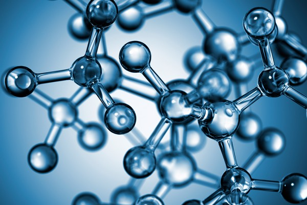
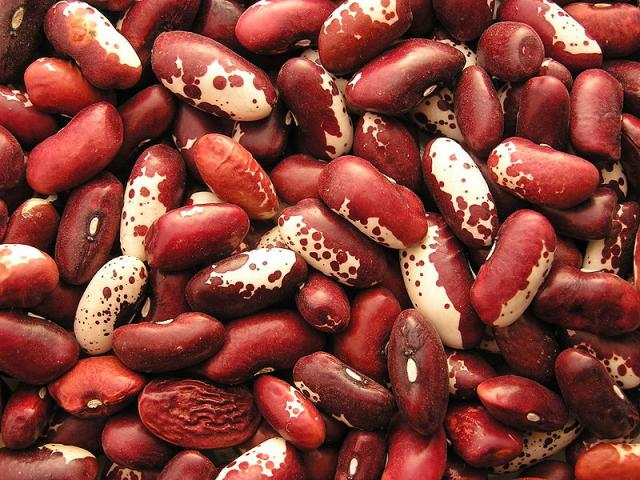

《The Life of Fish in Chi Wah Learning Commons》
Walking past the spiral staircase of Chi Wah Learning Commons, have you ever noticed the marine aquarium on the second floor? Colorful tropical fish swim freely in crystal-clear water, but do they live in a healthy state? How can we enhance their physical and mental well-being? Please read this article as we embark on a chemical exploration of the scientific approach to fishkeeping.

《When Virus Meet Cancer: A New Possibility for Cancer Therapy?》
Viruses to cure disease? Viruses can "hijack" host cells and replicate themselves based on their genetic information. Read this article to see how scientists utilize viruses to treat dreadful cancer.

《Prevention for the COVID-19 virus may have been hidden in your daily lives》
Have you ever thought something hidden in your daily lives could prevent the infection of Covid-19 and ease the pain caused by the virus? Superisingly, green tea is one of them. Read the following article to find out the scientific reasons for which green tea can help prevent the Covid-19 and how should we use it.

《How to “Dress” a Molecule》
Penicillin, taxol, organic compounds found in nature have provided incredible inspirations for drug development. However, how to make sure natural product is safe for human, how to optimize the efficacy of extracted natural products in treating diseases? Read the following article to find out one innovation strategy to tackle these challenges.

《Will a vegan diet weaken your exercise capacity?》
Are you curious if going vegan might drain your workout mojo? Recent research reveals that not only do vegans hold their own, but they might even have a secret weapon for endurance. We'll dive into the nitty-gritty of this study and explain how having a vegen diet can actually supercharge your athletic performance.
《Does our cognition faithfully reproduce the environment? Insights from neurobiology and psychology.》
Ever wondered if our minds truly reflect the world around us? Read this article to dive into the captivating world of cognition to explore how our brains work. From how we sense things to what we choose to focus on and even our knack for weaving imaginative tales, you'll see that our minds have a unique way of interpreting the world. This journey invites you to embrace the colorful, imaginative, and occasionally personal nature of human thinking.

《Purification of stilbene synthase from Phaseolus vulgaris and determination of its catalytic activity》
Stilbene Synthase (STS) is an important synthase used in the synthesis of stilbene compounds. Stilbene compounds are the general name of the compound whose parent nucleus is stilbene. We need to determine in Phaseolus vulgaris whether the stilbene synthase has the activity of common stilbene synthase. Until now, stilbenes had not been found in Phaseolus plants. In this experiment, we used transgenic technology, His column, Q column, LC-MS and other techniques to explore the activity. In this experiment, we successfully demonstrated that Phaseolus vulgaris contains active stilbene synthase. This is the first active stilbene synthase found in Phaseolus plants. Phaseolus plants also have the ability to produce stilbenes.